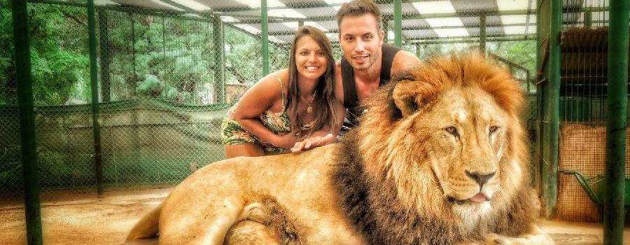

Excurcion Leon
Combina observación directa de los animales con oportunidades educativas para aprender sobre su comportamiento, conservación y hábitat. Es una experiencia enriquecedora tanto para niños como para adultos interesados en la vida salvaje. En ciertos horarios, realizan actividades especiales como la alimentación pública de los leones. Los visitantes también tienen la oportunidad de interactuar con el personal del zoológico, como los cuidadores y educadores. Estos profesionales pueden ofrecer información adicional sobre los leones y el trabajo que se realiza para su bienestar y conservación. Para los más pequeños, algunos zoológicos tienen actividades educativas diseñadas para enseñarles sobre los leones de manera interactiva y divertida, como juegos o actividades de arte.
